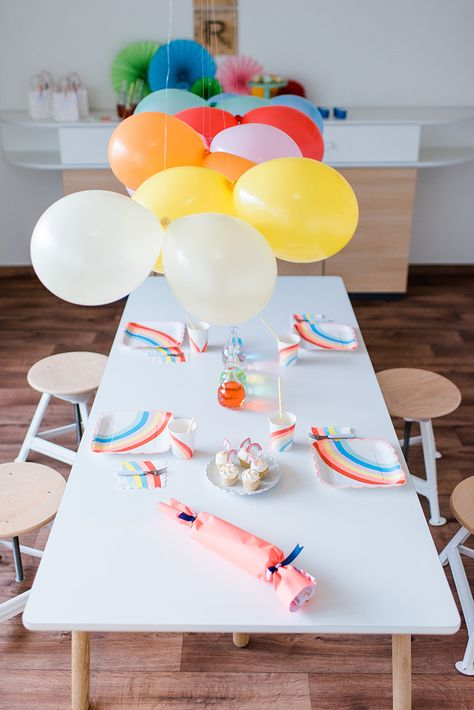
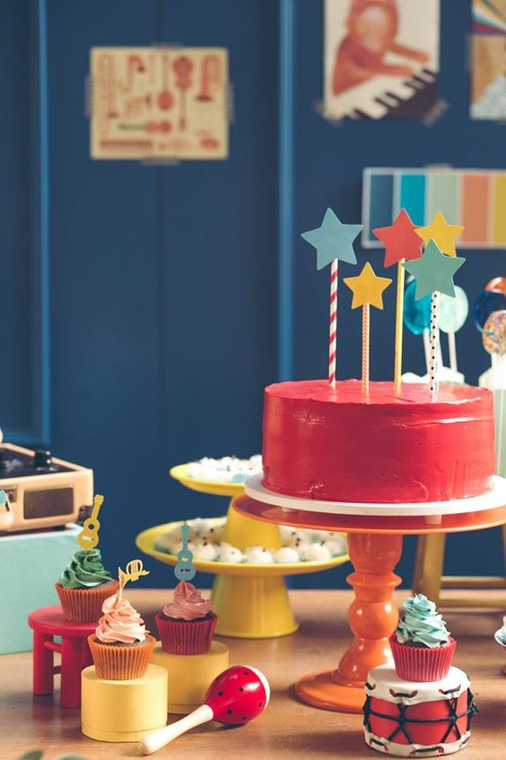

Desde que soy chiquita me apasiona festejar los cumples y cada acontecimiento importante. Me despertaba a la madrugada y llenaba la casa con sorpresas para mamá, papá, o mi hermano, quien sea que cumplía años.
Ni hablar cuando llegaba el 1º de Mayo, ¡mi cumple! Hasta el día de hoy me genera una felicidad organizar todo, decorar y pasar el día con toda la gente que quiero.
📌Así que en esta nota, te voy a dejar unos cuantos tips para que tengas en cuenta a la hora de tener que organizar un festejo, porque por más chiquito, o grande que sea, hay un ABC que fui aprendiendo, ¡y que no falla!

¿Estás lista? ¡Tomá nota! 📝
✔ Para empezar tenemos que tener bien en claro dónde es que vamos a festejar y qué tipo de festejo queremos hacer. No es lo mismo tener que planificar un festejo chiquito en casa, que algo más grande en un salón, quinta o "x". No es lo mismo organizar una merienda, que un almuerzo, etc.
¿Por qué es tan importante esto? Porque a partir de acá vamos a tener una idea más clara para definir la cantidad de invitados, de comida, los horarios, el lugar y todo lo demás!
✔ Ahora sí, ya tenes claro qué tipo de festejo vas a hacer y dónde lo vas a llevar a cabo. Ahora te toca plantearte un presupuesto. Este es uno de los puntos más importantes antes de arrancar. ¿Por qué? Porque con esto vas a poder definir mas o menos cuánta gente podes invitar, vas a limitarte en gastar de más y te vas a organizar mejor. ¡YAAAY!
✔ En función de tu presupuesto y la cantidad de invitados, vas a ir definiendo el tipo de comida que vas a hacer: Pensa si preferís que sea más libre, que cada uno se sirva lo que quiere y sin tanta elaboración o si preferís designar lugares y que cada uno tenga su plato (?).
Anda haciéndote este tipo de preguntas así vas armando la lista y empezas a calcular cantidades.
💃 Ok, ya tenemos definido el presupuesto, el lugar, la fecha, la cantidad de invitados y la comida… ¡¡¡Ahora empieza la parte más linda y divertida!!!

Pensemos en la Deco...Podes o no, elegir una temática, pero siempre está bueno sumar detalles de deco al festejo y a veces elegir una temática lo hace más fácil. Además un ambiente decorado, con detalles especiales, hace que la gente se sienta más agasajada y que vivan un momento más recordable en el tiempo.
*Si estás armando un festejo para otra persona, está bueno pensar y enfocarse en esta persona para definir una temática o hilo para seguir en la deco: qué cosas le gustan, si tiene algún hobbie, su música preferida, su color favorito, un destino que le encante, comidas que le gusten, y así podemos armar una lista interminable... Cualquier cosa puede ser un buen disparador. Ponete creativa, estoy segura que lo/la vas a sorprender y que nunca se va a olvidar de este momento.
¡Ojo! Que si es autofestejo de cumple, corre la misma jugada: enfócate en vos y autorespondete esas preguntas y de ahí seguramente surja la temática ideal.
✔ Una vez que lo definas, pensa donde vas a concentrar la deco: En la mesa dulce, en la entrada, en un sector para fotos, ¡puede ser donde se te ocurra! Con esto ya vas a definir qué cosas necesitas encargar o hacer.
✔ En caso de que compres, llegamos al momento de encontrar quien te arme esa deco. Buscá aquella marca que represente lo que queres transmitir, la estética que mas te gusta, que te transmita la "energía" que está alineada con ese momento tan especial.
*Siempre que puedas, encarga las cosas con tiempo. Nunca sabes los contratiempos que pueden surgir y es preferible estar tranquila con eso.
✔ Por otro lado, y no menos importante es la pastelería, o mejor dicho, yendo a lo concreto: LA TORTA. No puede faltar, sea casera o que la encargues a una pastelera, el cumpleañero tiene que tener su torta con velitas, ¿no?
Trata de respetar la paleta de colores que elegiste para la deco, a veces es mejor una torta más neutral y sumarle un lindo cake topper a tono con el resto.
✔ Si es un cumple o festejo infantil, andá pensando si vas a contratar animaciones, qué tipo de animación va a ser o qué actividades vas a proponerle a los chicos para que se entretengan, quizás podes buscar algo que tenga que ver con la temática que elegiste.
✔Acordate de ir buscando una buena playlist para pasar durante el evento. ¡Esto me parece CLAVE! Porque acompaña el ambiente y el mood que queremos crear.
Yo estoy armando una en Spotify, que pronto va a a estar llena de canciones para dejar de fondo en los festejos, podes ir siguiéndola en este link.
✔ Siempre que este dentro de las posibilidades, es lindo pensar en algún recuerdo o souvenir para darles a los invitados, sobre todo en los cumples de los más chiquitos. Pero acá me parece súper importante pensar en algo que sea útil, que sea para comer, algo para jugar o que sea algo simbólico que nadie se lo olvide. ¿Por qué digo esto? Muchas veces los souvenirs son fotos del cumpleañero, cosas personalizadas con nombre y fecha o adornos, que quizás a quienes amamos al cumpleañero nos encanta, pero que no muchos de los invitados van a usarlos para decorar o dejar en sus casas. VERDAD 100% HONESTA, pero verdad al fin. Entonces mejor destinar la plata en algo que el invitado disfrute de recibir y vos estes contenta con darlo.
✔ Por último, nos queda armar las invitaciones, que siempre está bueno que tengan que ver con la temática como para dar un adelanto de lo que va a ser el festejo. Hoy en día las invitaciones se hacen por whatsapp, así que con buscar una linda opción digital, estarías super. Acordate de ser clara en los detalles de la invitación y de no olvidarte ningún dato importante.
💪Para esta altura ya estas casi convertida en experta en organización de cumples. ¡Jajaja!
📋Ahora solo queda armarte una listita con las tareas y fechas de los pendientes (cuando retirar cada cosa, recordatorio de mandar invitaciones, pedir confirmación de asistencias, etc.) e ir tachando y completando cada deadline con tiempo y tranquila asi evitamos el estress, ¿vió?
Y si te gustaría aprender más sobre deco para cumpleaños, te invito a chusmear nuestros talleres online, donde te enseñamos todo lo que tenes que saber para convertirte en un/a campeon/a de los festejos.